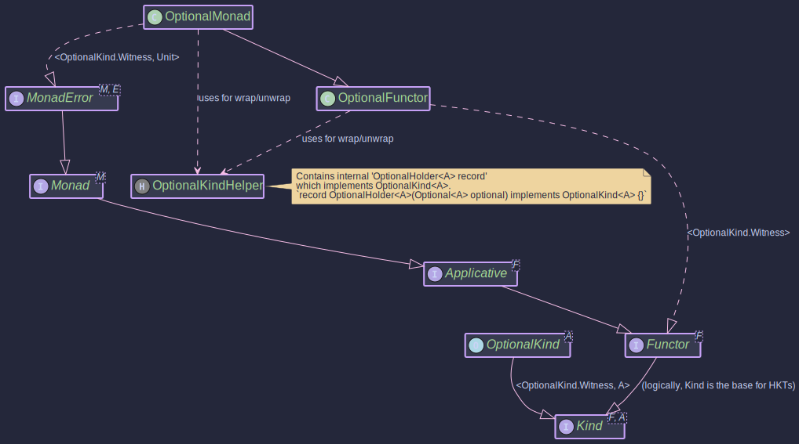

The OptionalMonad:
Monadic Operations for Java Optional
- How to integrate Java's Optional with Higher-Kinded-J's type class system
- Using MonadError with Unit to represent absence as an error state
- Chaining optional operations with automatic empty propagation
- Building safe database and service call pipelines
- When to choose Optional vs Maybe for your use case
Purpose
The OptionalMonad in the Higher-Kinded-J library provides a monadic interface for Java's standard java.util.Optional<T>. It allows developers to work with Optional values in a more functional and composable style, enabling operations like map, flatMap, and ap (apply) within the higher-kinded type (HKT) system. This is particularly useful for sequencing operations that may or may not produce a value, handling the presence or absence of values gracefully.
Key benefits include:
- Functional Composition: Easily chain operations on
Optionals, where each operation might return anOptionalitself. If any step results in anOptional.empty(), subsequent operations are typically short-circuited, propagating the empty state. - HKT Integration:
OptionalKind<A>(the higher-kinded wrapper forOptional<A>) andOptionalMonadallowOptionalto be used with generic functions and type classes expectingKind<F, A>,Functor<F>,Applicative<F>,Monad<M>, or evenMonadError<M, E>. - Error Handling for Absence:
OptionalMonadimplementsMonadError<OptionalKind.Witness, Unit>. In this context,Optional.empty()is treated as the "error" state, andUnitis used as the phantom error type, signifying absence rather than a traditional exception.
It implements MonadError<OptionalKind.Witness, Unit>, which means it also transitively implements Monad<OptionalKind.Witness>, Applicative<OptionalKind.Witness>, and Functor<OptionalKind.Witness>.
Structure

How to Use OptionalMonad and OptionalKind
Creating Instances
OptionalKind<A> is the higher-kinded type representation for java.util.Optional<A>. You typically create OptionalKind instances using the OptionalKindHelper utility class or the of and raiseError methods from OptionalMonad.
OPTIONAL.widen(Optional)
Converts a standard java.util.Optional<A> into an OptionalKind<A>.
// Wrapping a present Optional
Optional<String> presentOptional = Optional.of("Hello");
OptionalKind<String> kindPresent = OPTIONAL.widen(presentOptional);
// Wrapping an empty Optional
Optional<Integer> emptyOptional = Optional.empty();
OptionalKind<Integer> kindEmpty = OPTIONAL.widen(emptyOptional);
// Wrapping an Optional that might be null (though Optional itself won't be null)
String possiblyNullValue = null;
Optional<String> nullableOptional = Optional.ofNullable(possiblyNullValue); // Results in Optional.empty()
OptionalKind<String> kindFromNullable = OPTIONAL.widen(nullableOptional);
Lifts a single value (which can be null) into the OptionalKind context. It uses Optional.ofNullable(value) internally.
OptionalMonad optionalMonad = OptionalMonad.INSTANCE;
Kind<OptionalKind.Witness, String> kindFromValue = optionalMonad.of("World"); // Wraps Optional.of("World")
Kind<OptionalKind.Witness, Integer> kindFromNullValue = optionalMonad.of(null); // Wraps Optional.empty()
Creates an empty OptionalKind. Since Unit is the error type, this method effectively represents the "error" state of an Optional, which is Optional.empty(). The error argument (which would be Unit.INSTANCE for Unit) is ignored.
OptionalMonad optionalMonad = OptionalMonad.INSTANCE;
Kind<OptionalKind.Witness, String> emptyKindFromError = optionalMonad.raiseError(Unit.INSTANCE); // Represents Optional.empty()
To get the underlying java.util.Optional<A> from an OptionalKind<A>, use OPTIONAL.narrow():
OptionalKind<String> kindPresent = OPTIONAL.widen(Optional.of("Example"));
Optional<String> unwrappedOptional = OPTIONAL.narrow(kindPresent); // Returns Optional.of("Example")
System.out.println("Unwrapped: " + unwrappedOptional);
OptionalKind<Integer> kindEmpty = OPTIONAL.widen(Optional.empty());
Optional<Integer> unwrappedEmpty = OPTIONAL.narrow(kindEmpty); // Returns Optional.empty()
System.out.println("Unwrapped Empty: " + unwrappedEmpty);
Key Operations
The OptionalMonad provides standard monadic and error-handling operations:
Applies a function f to the value inside fa if it's present. If fa is empty, it remains empty. The function f can return null, which Optional.map will turn into an Optional.empty().
public void mapExample() {
OptionalMonad optionalMonad = OptionalMonad.INSTANCE;
OptionalKind<Integer> presentNumber = OPTIONAL.widen(Optional.of(10));
OptionalKind<Integer> emptyNumber = OPTIONAL.widen(Optional.empty());
Function<Integer, String> intToString = i -> "Number: " + i;
Kind<OptionalKind.Witness, String> presentString = optionalMonad.map(intToString, presentNumber);
// OPTIONAL.narrow(presentString) would be Optional.of("Number: 10")
Kind<OptionalKind.Witness, String> emptyString = optionalMonad.map(intToString, emptyNumber);
// OPTIONAL.narrow(emptyString) would be Optional.empty()
Function<Integer, String> intToNull = i -> null;
Kind<OptionalKind.Witness, String> mappedToNull = optionalMonad.map(intToNull, presentNumber);
// OPTIONAL.narrow(mappedToNull) would be Optional.empty()
System.out.println("Map (Present): " + OPTIONAL.narrow(presentString));
System.out.println("Map (Empty): " + OPTIONAL.narrow(emptyString));
System.out.println("Map (To Null): " + OPTIONAL.narrow(mappedToNull));
}
Applies a function f to the value inside ma if it's present. The function f itself returns an OptionalKind<B>. If ma is empty, or if f returns an empty OptionalKind, the result is an empty OptionalKind.
public void flatMapExample() {
OptionalMonad optionalMonad = OptionalMonad.INSTANCE;
OptionalKind<String> presentInput = OPTIONAL.widen(Optional.of("5"));
OptionalKind<String> emptyInput = OPTIONAL.widen(Optional.empty());
Function<String, Kind<OptionalKind.Witness, Integer>> parseToIntKind = s -> {
try {
return OPTIONAL.widen(Optional.of(Integer.parseInt(s)));
} catch (NumberFormatException e) {
return OPTIONAL.widen(Optional.empty());
}
};
Kind<OptionalKind.Witness, Integer> parsedPresent = optionalMonad.flatMap(parseToIntKind, presentInput);
// OPTIONAL.narrow(parsedPresent) would be Optional.of(5)
Kind<OptionalKind.Witness, Integer> parsedEmpty = optionalMonad.flatMap(parseToIntKind, emptyInput);
// OPTIONAL.narrow(parsedEmpty) would be Optional.empty()
OptionalKind<String> nonNumericInput = OPTIONAL.widen(Optional.of("abc"));
Kind<OptionalKind.Witness, Integer> parsedNonNumeric = optionalMonad.flatMap(parseToIntKind, nonNumericInput);
// OPTIONAL.narrow(parsedNonNumeric) would be Optional.empty()
System.out.println("FlatMap (Present): " + OPTIONAL.narrow(parsedPresent));
System.out.println("FlatMap (Empty Input): " + OPTIONAL.narrow(parsedEmpty));
System.out.println("FlatMap (Non-numeric): " + OPTIONAL.narrow(parsedNonNumeric));
}
Applies an OptionalKind containing a function ff to an OptionalKind containing a value fa. If both are present, the function is applied. Otherwise, the result is empty.
public void apExample() {
OptionalMonad optionalMonad = OptionalMonad.INSTANCE;
OptionalKind<Function<Integer, String>> presentFuncKind =
OPTIONAL.widen(Optional.of(i -> "Value: " + i));
OptionalKind<Function<Integer, String>> emptyFuncKind =
OPTIONAL.widen(Optional.empty());
OptionalKind<Integer> presentValueKind = OPTIONAL.widen(Optional.of(100));
OptionalKind<Integer> emptyValueKind = OPTIONAL.widen(Optional.empty());
// Both present
Kind<OptionalKind.Witness, String> result1 = optionalMonad.ap(presentFuncKind, presentValueKind);
// OPTIONAL.narrow(result1) is Optional.of("Value: 100")
// Function empty
Kind<OptionalKind.Witness, String> result2 = optionalMonad.ap(emptyFuncKind, presentValueKind);
// OPTIONAL.narrow(result2) is Optional.empty()
// Value empty
Kind<OptionalKind.Witness, String> result3 = optionalMonad.ap(presentFuncKind, emptyValueKind);
// OPTIONAL.narrow(result3) is Optional.empty()
System.out.println("Ap (Both Present): " + OPTIONAL.narrow(result1));
System.out.println("Ap (Function Empty): " + OPTIONAL.narrow(result2));
System.out.println("Ap (Value Empty): " + OPTIONAL.narrow(result3));
}
Example: handleErrorWith(Kind<OptionalKind.Witness, A> ma, Function<Unit, Kind<OptionalKind.Witness, A>> handler)
If ma is present, it's returned. If ma is empty (the "error" state), the handler function is invoked (with Unit.INSTANCE as the Unit argument) to provide a recovery OptionalKind.
public void handleErrorWithExample() {
OptionalMonad optionalMonad = OptionalMonad.INSTANCE;
Kind<OptionalKind.Witness, String> presentKind = OPTIONAL.widen(Optional.of("Exists"));
OptionalKind<String> emptyKind = OPTIONAL.widen(Optional.empty());
Function<Unit, Kind<OptionalKind.Witness, String>> recoveryFunction =
(Unit unitInstance) -> OPTIONAL.widen(Optional.of("Recovered Value"));
// Handling error on a present OptionalKind
Kind<OptionalKind.Witness, String> handledPresent =
optionalMonad.handleErrorWith(presentKind, recoveryFunction);
// OPTIONAL.narrow(handledPresent) is Optional.of("Exists")
// Handling error on an empty OptionalKind
Kind<OptionalKind.Witness, String> handledEmpty =
optionalMonad.handleErrorWith(emptyKind, recoveryFunction);
// OPTIONAL.narrow(handledEmpty) is Optional.of("Recovered Value")
System.out.println("HandleError (Present): " + OPTIONAL.narrow(handledPresent));
System.out.println("HandleError (Empty): " + OPTIONAL.narrow(handledEmpty));
}
To use OptionalMonad in generic contexts that operate over Kind<F, A>:
public void monadExample() {
OptionalMonad optionalMonad = OptionalMonad.INSTANCE;
// 1. Create OptionalKind instances
OptionalKind<Integer> presentIntKind = OPTIONAL.widen(Optional.of(10));
Kind<OptionalKind.Witness, Integer> emptyIntKind = optionalMonad.raiseError(null); // Creates empty
// 2. Use map
Function<Integer, String> intToMessage = n -> "Value is " + n;
Kind<OptionalKind.Witness, String> mappedPresent = optionalMonad.map(intToMessage, presentIntKind);
Kind<OptionalKind.Witness, String> mappedEmpty = optionalMonad.map(intToMessage, emptyIntKind);
System.out.println("Mapped (Present): " + OPTIONAL.narrow(mappedPresent)); // Optional[Value is 10]
System.out.println("Mapped (Empty): " + OPTIONAL.narrow(mappedEmpty)); // Optional.empty
// 3. Use flatMap
Function<Integer, Kind<OptionalKind.Witness, Double>> intToOptionalDouble = n ->
(n > 0) ? optionalMonad.of(n / 2.0) : optionalMonad.raiseError(null);
Kind<OptionalKind.Witness, Double> flatMappedPresent = optionalMonad.flatMap(intToOptionalDouble, presentIntKind);
Kind<OptionalKind.Witness, Double> flatMappedEmpty = optionalMonad.flatMap(intToOptionalDouble, emptyIntKind);
Kind<OptionalKind.Witness, Integer> zeroIntKind = optionalMonad.of(0);
Kind<OptionalKind.Witness, Double> flatMappedZero = optionalMonad.flatMap(intToOptionalDouble, zeroIntKind);
System.out.println("FlatMapped (Present): " + OPTIONAL.narrow(flatMappedPresent)); // Optional[5.0]
System.out.println("FlatMapped (Empty): " + OPTIONAL.narrow(flatMappedEmpty)); // Optional.empty
System.out.println("FlatMapped (Zero): " + OPTIONAL.narrow(flatMappedZero)); // Optional.empty
// 4. Use 'of' and 'raiseError' (already shown in creation)
// 5. Use handleErrorWith
Function<Unit, Kind<OptionalKind.Witness, Integer>> recoverWithDefault =
v -> optionalMonad.of(-1); // Default value if empty
Kind<OptionalKind.Witness, Integer> recoveredFromEmpty =
optionalMonad.handleErrorWith(emptyIntKind, recoverWithDefault);
Kind<OptionalKind.Witness, Integer> notRecoveredFromPresent =
optionalMonad.handleErrorWith(presentIntKind, recoverWithDefault);
System.out.println("Recovered (from Empty): " + OPTIONAL.narrow(recoveredFromEmpty)); // Optional[-1]
System.out.println("Recovered (from Present): " + OPTIONAL.narrow(notRecoveredFromPresent)); // Optional[10]
// Unwrap to get back the standard Optional
Optional<String> finalMappedOptional = OPTIONAL.narrow(mappedPresent);
System.out.println("Final unwrapped mapped optional: " + finalMappedOptional);
}
This example demonstrates wrapping Optionals, applying monadic and error-handling operations via OptionalMonad, and unwrapping back to standard Optionals. The MonadError capabilities allow treating absence (Optional.empty) as a recoverable "error" state.